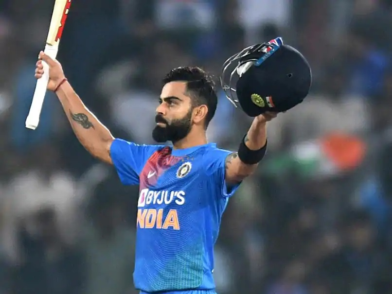

<!DOCTYPE html>
<html>
<head>
<title>hari</title>
<style>
body {
  background-image:url('grey.jpg');
  background-repeat: no-repeat; 
  background-attachment: fixed;
  background-size: cover;
}
</style>
<centre><h1 style="color:black;">ACHIEVEMENT OF VIRAT</h1></center><h2>CAREER
</h2>
<center></center>
<h3>Most runs in a single IPL season – 973
Kohli scored 973 runs in the ninth edition of the Indian Premier League to guide his team to the finals of the tournament. The season saw him score as many as four centuries — the most by a player in a single season. That year, Kohli led India to new heights as a captain with his consistency.
</h3>
<centre><h2 style="color:black;">AWARDED</h2>

<h3>Virat Kohli Awards
Sir Garfield Sobers Trophy (ICC Cricketer of the Year): 2017
ICC ODI Player of the Year: 2012, 2017
ICC Test Team of the Year: 2017 (captain)
Padma Shri: 2017
ICC ODI Team of the Year: 2012, 2014, 2016 (captain), 2017 (captain)
Arjuna Award: 2013
Rajiv Gandhi Khel Ratna: 2018
Sir Garfield Sobers Award for ICC Men’s Cricketer of the Decade(2010-2020)</h3>
<centre><h2 style="color:black;">IPL and T20 dominance</h2>
<center></center>
<h3>He continued his emphatic run in the World T20, batting (and running) like a man possessed, thrashing boundaries with ridiculous ease. Despite an 89* in the semi-final against the West Indies (extending his inhuman run of form in the format), India's bowling panicked at a crucial stage. One had to feel sorry for him as he had to make do with the 'Player of the tournament' award for the second successive Twenty20 World Cup; a distinction he would've gladly exchanged for the elusive World T20 trophy. Kohli's thirst for runs showed no signs of slowing down as he looted a small matter of 973 runs during the 2016 edition of the Indian Premier League, the most (by far) by any batsman in the history of the tournament - as he led his Royal Challengers Bangalore (RCB) franchise to a runners-up finish.</h3>


<center><h1>"IF YOURE TRUE TO YOURSELF,YOU WON'T FEAR ANYTHING"</h>


